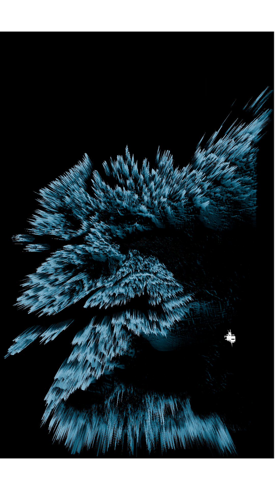
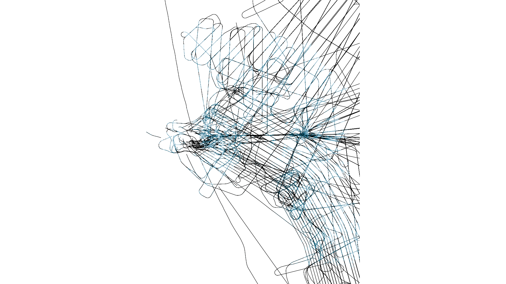

What is latent in ice
This project uses Blender modeling and post processing techniques to create images and data visualizations of the Greenland ice sheet and the buried United States military base Camp Century. Scientists estimate that the ice sheet melt will expose the toxic debris left behind in the camp, including nuclear and human waste, by 2090.
The image on the left shows the difference in Digital Elevation Models from 2004 and 2024 using the form of the ice sheet itself. The enlarged plan of Camp Century is visible in the bottom right.
The image on the right is created using the flight paths of radar planes derived from QGreenland, revealing the mechanisms and infrastructures of data collection at this site. The paths are used as a mask in Blender post processing, revealing the model image only within these lines.
